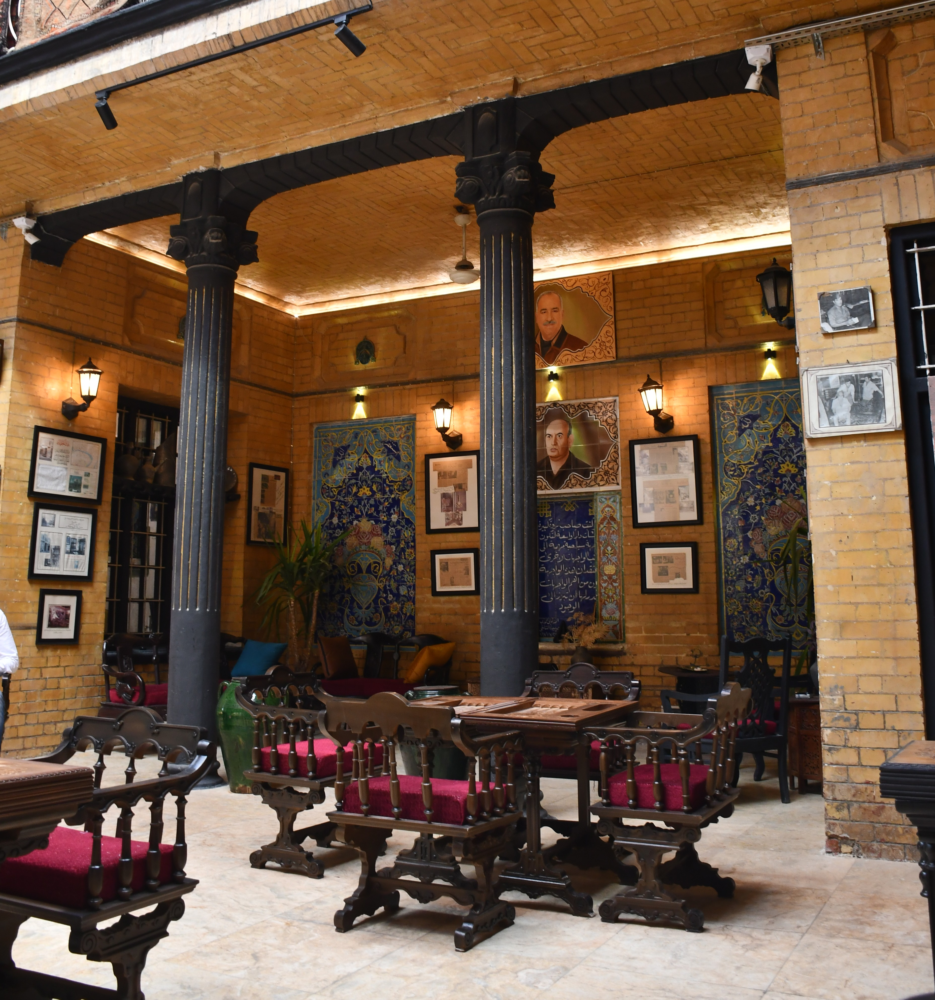

الاستقبال الرسمي
استضافة الوفود والشخصيات المهمة ضمن ترتيبات استقبال خاصة تراعي الخصوصية وطبيعة الزيارة.
دراسة جدوى استثمارية وتشغيلية | بغداد 2026
مشروع استثماري لتشغيل بيت التحفيات في بغداد كوجهة متخصصة باستقبال الوفود والشخصيات الرسمية، وتنظيم الفعاليات والاجتماعات الخاصة، من خلال عقود مؤسسية وخدمات ضيافة متكاملة تجمع بين خصوصية المكان التراثي والمعايير المهنية للتنظيم والاستقبال.
عرض استثماري أولي يخضع للاتفاق والتعاقد النهائي.
تعرّف على بيت التحفيات
01 — عن بيت التحفيات
يقع بيت التحفيات في شارع أبي نؤاس وسط بغداد، داخل مبنى تراثي يعود إلى ثلاثينيات القرن الماضي، ويضم فضاءات داخلية وباحة وسطية وحديقة تحمل عناصر من العمارة البغدادية التقليدية.
ارتبط المكان منذ عام 1989 بتجارة التحف والمقتنيات الفنية والتراثية على يد الراحل طارق محمد علي الألماني، وأصبح اسمه جزءاً من تاريخ النشاط الثقافي والتجاري للعائلة.
وبعد توقف نشاطه عام 2004، بدأت أعمال إعادة تأهيله وترميمه عام 2022 بهدف الحفاظ على طابعه المعماري وإعادته إلى الحياة بوظيفة ثقافية واقتصادية معاصرة.
التوظيف المقترح للمكان
يقوم التصور الاستثماري على تهيئة بيت التحفيات لاستضافة الوفود الدبلوماسية والشخصيات الرسمية والفعاليات المؤسسية الخاصة، ضمن بيئة تجمع بين الخصوصية المعمارية للمكان ومتطلبات الاستقبال والتنظيم المهني.
تُوظَّف الباحة الداخلية والحديقة والمساحات المتاحة لاستضافة الاجتماعات والاستقبالات والمناسبات المحدودة، مع إعداد ترتيبات خاصة لكل فعالية بحسب عدد الضيوف وطبيعة المناسبة ومتطلباتها.
ويتولى مطبخ بيت التحفيات إعداد الوجبات والضيافة وفق قوائم طعام مدروسة، مع تقديمها بأسلوب يتناسب مع الهوية البغدادية للمكان ومستوى المناسبة، وبما يحقق تجربة متكاملة للجهة المستضيفة وضيوفها.
يقوم المشروع على تحويل خصوصية المكان التاريخية إلى قيمة تشغيلية من خلال تعاقدات مؤسسية وخدمات ضيافة متخصصة.
03 — الفرصة التشغيلية
تتمثل الفرصة التشغيلية في توظيف بيت التحفيات كوجهة متخصصة لاستضافة الأنشطة الرسمية والدبلوماسية والمؤسسية، من خلال بناء علاقات تعاقدية مع السفارات والبعثات الدبلوماسية والشركات والمؤسسات المحلية والدولية.
يعتمد المشروع على تقديم خدمات متكاملة تشمل تخصيص المكان وتجهيزه، وتنظيم الاستقبال، وإعداد الطعام والضيافة، وإدارة متطلبات الفعاليات، وفق طبيعة كل مناسبة وعدد المشاركين.
ويتيح هذا النموذج تطوير مصادر إيرادات متعددة من خلال الحجوزات المؤسسية والخدمات المصاحبة لها، مع تنظيم العمل وفق جدول الفعاليات والحجوزات المؤكدة.
استضافة الاستقبالات الرسمية والأنشطة الثقافية والمناسبات الخاصة بالبعثات الدبلوماسية.
تنظيم الاجتماعات وورش العمل واللقاءات المؤسسية والفعاليات الخاصة.
استضافة اجتماعات كبار الشخصيات ومناسبات الشركاء واستقبالات الوفود التجارية.
توفير ترتيبات استقبال وضيافة خاصة للوفود الرسمية والضيوف رفيعي المستوى.
نموذج الأعمال
يستهدف المشروع تطوير اتفاقيات تعاون وتعاقدات مع الجهات الراغبة في اعتماد بيت التحفيات لاستضافة أنشطتها وفعالياتها، سواء من خلال اتفاقيات دورية أو حجوزات مستقلة.
وتحدد الخدمات والأسعار لكل جهة وفق عدد الفعاليات ونوعها، وحجم الحضور، ومتطلبات الضيافة والتجهيز والتنظيم.
جميع التعاقدات المذكورة فرص مستهدفة ضمن نموذج التشغيل المقترح وليست عقوداً قائمة أو إيرادات مضمونة.
اتفاقيات مع السفارات والمؤسسات لتنظيم عدد من الفعاليات خلال فترة تعاقدية محددة، وفق شروط وأسعار وخدمات متفق عليها مسبقاً.
حجز بيت التحفيات لفعالية أو مناسبة محددة، مع إعداد عرض خدمات وتسعير يتناسب مع متطلبات الجهة المستضيفة.
توفير المأكولات والمشروبات وخدمات التقديم والتجهيز والتنظيم ضمن باقات خاصة بالفعاليات.
يعتمد المشروع على فريق تشغيلي أساسي يتولى إدارة الحجوزات والتنسيق مع الجهات المتعاقدة، والإشراف على تجهيز المكان وخدمات الضيافة.
تُنظَّم أعمال المطبخ والاستقبال والخدمة وفق برنامج الفعاليات المؤكدة، مع اعتماد وردية تشغيل أساسية واحدة وإمكانية الاستعانة بعاملين إضافيين عند الحاجة، بحسب طبيعة المناسبة وعدد الضيوف.
ويهدف هذا التنظيم إلى تحقيق التوازن بين جاهزية الموقع وجودة الخدمات والسيطرة على المصاريف التشغيلية.
04 — الاستثمار الأولي
يُخصص رأس المال الاستثماري المقترح لاستكمال المتطلبات الفنية والتشغيلية لبيت التحفيات، بما يشمل تجهيز المطبخ ومرافق الضيافة والاستقبال، وتأثيث المساحات الداخلية والحديقة، وتوفير الأنظمة والخدمات اللازمة لاستضافة الفعاليات الرسمية والمؤسسية.
وتراعي الموازنة المقترحة تخصيص جزء من رأس المال كاحتياطي نقدي لدعم مرحلة الانطلاق، وتغطية الالتزامات التشغيلية قبل انتظام الحجوزات والتعاقدات.
تمثل المبالغ الواردة تقديرات تخطيطية أولية تخضع للمراجعة وفق التجهيزات المتوفرة وعروض الأسعار الفعلية.
| البند | التصنيف | التكلفة بالدولار | النسبة من إجمالي الاستثمار | الغرض من الإنفاق |
|---|---|---|---|---|
| الإجمالي النهائي | 150,000$ | 100% | إجمالي رأس المال الاستثماري المقترح. | |
تُوجَّه النفقات الرأسمالية نحو التجهيزات الضرورية لجاهزية المكان والمطبخ وخدمات الضيافة، مع ترتيب أولويات الشراء والتنفيذ وفق احتياجات التشغيل الفعلية.
ويُحتفظ بمبلغ 30,000 دولار كاحتياطي نقدي لدعم الالتزامات التشغيلية خلال مرحلة الانطلاق، ولا يُعامل هذا المبلغ باعتباره مصروفاً منفذاً عند تأسيس المشروع.
كما ترتبط عمليات الشراء والتجهيز بمراجعة الموجودات الحالية والحصول على عروض أسعار مناسبة، بما يضمن استخدام رأس المال بكفاءة وتجنب الإنفاق غير الضروري.
الموازنة تقديرية لأغراض الدراسة الاستثمارية، ولا تمثل عروض أسعار نهائية أو التزامات تعاقدية. ويخضع الإنفاق الفعلي للمراجعة والاعتماد.
05 — نموذج التشغيل
يعتمد التشغيل المقترح لبيت التحفيات على فريق أساسي متخصص يتولى إدارة الحجوزات والعلاقات المؤسسية، والإشراف على المطبخ وخدمات الاستقبال والضيافة، وفق نظام وردية تشغيل واحدة وجدول الفعاليات المعتمد.
ويُستكمل الفريق عند الحاجة بعاملين إضافيين وفق متطلبات كل مناسبة، بما يتيح تنظيم التكاليف التشغيلية وربط الموارد البشرية بحجم النشاط الفعلي.
تُوزع المصاريف بين تكاليف شهرية ثابتة تُخصص للحفاظ على الجاهزية التشغيلية، وتكاليف متغيرة تُحتسب بصورة مستقلة لكل فعالية.
الفريق التشغيلي
يتولى الفريق الدائم الإشراف على الجاهزية اليومية للموقع، وتنظيم الحجوزات، وإعداد خدمات الضيافة وتنفيذ الفعاليات، مع إمكانية الاستعانة بموظفين مؤقتين وفق حجم الحضور ومتطلبات الخدمة.
| الوظيفة | العدد | الراتب الفردي | الإجمالي الشهري | المسؤوليات |
|---|---|---|---|---|
| إجمالي الرواتب | 7 موظفين | 5,300$ | إجمالي الرواتب الشهرية للفريق الأساسي. |
التكاليف الثابتة
تشمل المصاريف التشغيلية الثابتة الالتزامات اللازمة للمحافظة على جاهزية بيت التحفيات، واستمرارية الخدمات الأساسية، وإدارة الموقع والتواصل المؤسسي، بصرف النظر عن عدد الفعاليات المنفذة خلال الشهر.
| البند | التكلفة الشهرية | شرح المصروف |
|---|---|---|
| الإجمالي | 3,150$ | إجمالي المصاريف الشهرية الأخرى، دون الرواتب ودون تكاليف الفعاليات المباشرة. |
الالتزامات الشهرية
يمثل إجمالي 8,450$ الكلفة الشهرية التقديرية للمحافظة على الجاهزية التشغيلية الأساسية للمشروع، ولا يشمل التكاليف المباشرة للفعاليات أو الالتزامات غير المدرجة في الموازنة.
التكاليف المرتبطة بالنشاط
تُحدد التكلفة المباشرة لكل فعالية بناءً على عدد الضيوف وطبيعة قائمة الطعام ومتطلبات الاستقبال والتجهيز والخدمات الإضافية.
ويُعد ملف مالي مستقل لكل مناسبة، يتضمن الإيرادات المتفق عليها والتكاليف المباشرة، بما يتيح قياس مساهمة كل فعالية في تغطية المصاريف الثابتة وتحقيق أرباح المشروع.
تكلفة المواد المستخدمة لإعداد الوجبات والمشروبات وفق عدد الضيوف وقائمة الطعام المعتمدة.
أجور موظفي الخدمة والطهاة المساندين والعاملين المؤقتين عند الحاجة، بما يشمل المستحقات المرتبطة بالعمل الإضافي.
التنسيقات الخاصة والمستلزمات والتجهيزات المؤقتة المطلوبة بحسب طبيعة المناسبة.
تجهيزات الصوت والعرض والترجمة والخدمات التقنية الإضافية التي تتطلبها المناسبة.
التكاليف الإضافية المرتبطة بتجهيز المكان وإعادة ترتيبه بعد انتهاء الفعالية.
النقل والتوريد والخدمات الأمنية الإضافية وأي متطلبات أخرى تُحدد وفق العقد.
السيولة التشغيلية
خُصص مبلغ 30,000 دولار من رأس المال الاستثماري كاحتياطي نقدي لتغطية الالتزامات التشغيلية خلال مرحلة انطلاق المشروع، بما يوفر سيولة تساعد على الحفاظ على جاهزية بيت التحفيات إلى حين انتظام الحجوزات والتعاقدات.
وتتأثر مدة تغطية الاحتياطي بمستوى الإنفاق الفعلي، وتوقيت مباشرة العاملين، وحجم الإيرادات المحققة خلال الأشهر الأولى.
تمثل مدة التغطية سيناريو افتراضياً لا يحقق فيه المشروع أي إيرادات، مع استمرار المصاريف الثابتة بالمستوى المحدد. ولا تشمل هذه المدة أي التزامات إضافية أو نفقات غير مدرجة.
الإدارة المالية
يرتكز نموذج التشغيل على تحديد الحد الأدنى من العاملين اللازمين للحفاظ على جاهزية الموقع، وتنظيم مشتريات المواد الغذائية وفق الحجوزات المؤكدة، والاستعانة بخدمات إضافية بحسب متطلبات كل مناسبة.
كما تعتمد الإدارة على النظام المحاسبي والتشغيلي لمتابعة المصاريف الثابتة وتكاليف كل فعالية، وإعداد التقارير المالية الدورية، بما يساعد على اتخاذ القرارات التشغيلية استناداً إلى بيانات واضحة.
إعداد قوائم المشتريات والمواد الغذائية وفق الفعاليات المؤكدة، بما يقلل الهدر وتكدس المخزون.
تعزيز الفريق الأساسي بموظفين مؤقتين عند تنفيذ المناسبات التي تتطلب عدداً أكبر من العاملين.
إعداد تقرير مالي يتضمن إيرادات المناسبة وتكاليفها المباشرة ومساهمتها في النتائج المالية للمشروع.
يعتمد النموذج التشغيلي على المحافظة على جاهزية المكان وجودة الخدمة، مع تنظيم المصاريف الثابتة وربط التكاليف الإضافية بحجم النشاط الفعلي.
06 — الإيرادات والربحية
يعتمد بيت التحفيات على تقديم خدمات استضافة وضيافة حصرية بأسعار تبدأ من 3,000 دولار للفعالية، مع إعداد عرض مالي مستقل لكل حجز وفق طبيعة المناسبة ومتطلبات الجهة المستضيفة.
ويستفيد المشروع من المطبخ الداخلي والفريق التشغيلي الدائم والمرافق والتجهيزات المتوفرة، مما يقلل الحاجة إلى التعاقد مع جهات خارجية لتقديم الخدمات الأساسية.
أما الخدمات الإضافية، مثل تجهيزات المؤتمرات والترجمة والأنظمة الصوتية ومتطلبات الاستقبال الخاصة، فتُسعّر ضمن عرض الحجز بناءً على تكاليفها الفعلية وهوامش الخدمة المعتمدة.
لا يعتمد المشروع على أسعار ثابتة مرتبطة بعدد الضيوف. يبدأ سعر الحجز من 3,000 دولار، ويمكن أن يصل إلى 8,000 دولار أو أكثر بحسب طبيعة المناسبة والطعام والتجهيزات والخدمات الإضافية قبل اعتماد الحجز.
مصادر الإيرادات
تعتمد الأسعار على طبيعة المناسبة ومتطلباتها، وتُعد عروض مالية مستقلة للفعاليات الخاصة والتجهيزات الإضافية. ويُراجع سعر الحجز قبل التعاقد لضمان تغطية التكاليف الفعلية والمحافظة على هامش الخدمة المستهدف.
آلية التسعير
الحد الأدنى للحجز هو 3,000 دولار، وقد يرتفع السعر النهائي حسب متطلبات المناسبة والخدمات الإضافية وهوامش الإدارة والتنظيم.
تكلفة تقديم الخدمة
تُسجل تكاليف الطعام والخدمات الإضافية والعمالة المؤقتة ضمن المصاريف المباشرة لكل حجز، حتى لو جرى تضمينها في سعر الحجز النهائي.
لا تشمل هذه التكاليف الرواتب الدائمة أو المصاريف التشغيلية الثابتة، التي تُحتسب بصورة مستقلة ضمن موازنة التشغيل الشهري.
| نوع الفعالية | سعر الفعالية | التكلفة المباشرة | المساهمة التشغيلية | نسبة التكلفة |
|---|
تمثل المساهمة التشغيلية الفرق بين إيرادات الحجز وتكاليفه المباشرة، وهي المبلغ الذي يساهم في تغطية المصاريف الثابتة. ولا تمثل صافي ربح نهائي.
حماية هامش الربح
يُحدد سعر الحجز الأساسي بحسب طبيعة الفعالية والخدمات الاعتيادية المشمولة.
أما المتطلبات الإضافية مثل أنظمة الصوت والترجمة والتجهيزات التقنية والديكور الخاص والعمالة الإضافية، فتُحتسب ضمن عرض السعر قبل الاتفاق مع الجهة المستضيفة.
ويُراعى في تسعير الخدمات التي ينفذها موردون خارجيون إضافة هامش مناسب مقابل التنسيق والإدارة والإشراف على التنفيذ.
تُسجل تكلفة المورد ضمن المصاريف المباشرة، ويُسجل المبلغ المحصل من العميل ضمن الإيرادات. ولا تُعد نسبة 25% إلزامية لكل الخدمات، كما تُعالج الضرائب أو الرسوم الفعلية وفق الإطار المحاسبي المعتمد.
التوقعات التشغيلية
تعتمد السيناريوهات على مزيج مختلف من فئات الفعاليات الأربع، بحيث يكون 3,000 دولار هو السعر الابتدائي للحجز وليس متوسط السعر في جميع الحالات.
تُعرض حصة المستثمر الافتراضية على أساس افتراض توزيع كامل الربح التقديري الموجب وفق المصاريف المحتسبة، ولا تمثل دفعة مستحقة تلقائياً أو توزيعاً معتمداً.
محاكاة الإيرادات وفق طبيعة الحجوزات
يمكن تعديل عدد الفعاليات وأسعار الحجز ومتوسط الضيوف وتكاليف الطعام والعمالة والتجهيزات والمصاريف المباشرة الأخرى، وتنعكس التغييرات مباشرة على نتائج الأقسام المالية.
تُحسب حصة المستثمر في المحاكاة على أساس افتراض توزيع كامل الربح التقديري الموجب، ولا تمثل دفعة مستحقة أو توزيعاً معتمداً تلقائياً.
الأداء السنوي الافتراضي
تعرض المؤشرات السنوية النتائج الافتراضية لاستمرار كل سيناريو بالمستوى نفسه لمدة اثني عشر شهراً، ولا تمثل توقعاً مؤكداً للسنة الأولى.
تمثل النتائج السنوية محاكاة لاستمرار النشاط لمدة 12 شهراً بالمستوى المفترض، ولا تشمل مراحل التدرج في التشغيل أو الضرائب أو الاستهلاك أو أي التزامات غير مدرجة. ولا تمثل النتائج صافي الأرباح النهائي القابل للتوزيع.
الاستدامة التشغيلية
تتحقق نقطة التعادل التشغيلي عندما تكفي المساهمة الناتجة عن الفعاليات لتغطية المصاريف التشغيلية الثابتة للمشروع.
وتعتمد نقطة التعادل على مزيج أنواع الفعاليات وأسعارها وتكاليفها المباشرة، وليس على عدد الفعاليات وحده.
هذه أمثلة حسابية وليست قاعدة ثابتة لكل ثلاثة أو أربعة حجوزات، لأن قيمة ومساهمة كل فعالية تختلف.
استقرار مصادر الإيرادات
يستهدف المشروع بناء علاقات تعاقدية مستمرة مع السفارات والمصارف والشركات والمؤسسات، بهدف تحويل جزء من الحجوزات المنفردة إلى برامج فعاليات مخططة على مدار السنة.
هذه أهداف تجارية وليست تعاقدات موقعة أو حجوزات مؤكدة، ولا تضاف إلى إيرادات السيناريوهات مرة ثانية.
إعداد اتفاقيات تحدد الخدمات المتاحة وآلية الحجز والأسعار والشروط المالية.
تحديد الحد الأدنى لعدد الفعاليات أو القيمة التعاقدية السنوية عندما يكون ذلك مناسباً ومتفقاً عليه.
استقبال حجوزات الشركات والمصارف ورجال الأعمال والوفود الخاصة خارج الاتفاقيات السنوية.
مثال افتراضي: أربع حجوزات سنوية بالحد الأدنى البالغ 3,000 دولار للحجز تعني قيمة تقديرية أولية تبلغ 12,000 دولار قبل أي خدمات إضافية مسعرة ضمن عرض الحجز. هذا نموذج تسعير وليس عقداً قائماً.
إدارة الإيرادات
تعتمد الإدارة التجارية للمشروع على إعداد عروض أسعار واضحة، وتحديد نطاق الخدمات قبل تأكيد الحجز، وتنظيم مواعيد الدفعات والإلغاء والتعديل ضمن اتفاقيات مكتوبة.
اعتماد آلية واضحة لتأكيد المواعيد والدفعات، مع مراعاة الإجراءات التعاقدية الخاصة بالسفارات والمؤسسات.
توثيق أعداد الضيوف وقوائم الطعام والتجهيزات والخدمات الإضافية، بما يحد من التكاليف غير المخطط لها.
توزيع النشاط بين السفارات والمصارف والشركات والمؤسسات ورجال الأعمال للحد من تركز الإيرادات.
إعداد تقرير مالي بعد كل فعالية يتضمن الإيرادات المحققة والتكاليف المباشرة والمساهمة التشغيلية.
توضح السيناريوهات أن قدرة بيت التحفيات على تحقيق فائض تشغيلي ترتبط بعدد الفعاليات المنفذة، ومتوسط قيمتها، والسيطرة على تكاليف الطعام والخدمة والتجهيز.
ويُعد الوصول إلى متوسط خمس فعاليات شهرياً هدفاً تشغيلياً للدراسة، مع الاستمرار في تطوير التعاقدات المؤسسية والحجوزات المستقلة لرفع انتظام النشاط.
وتبقى النتائج المالية تقديرية إلى حين التحقق من الأسعار والتكاليف الفعلية، واعتماد الإطار المحاسبي والقانوني الذي يحدد صافي الأرباح القابل للتوزيع.
تقوم الجدوى التشغيلية للمشروع على تحويل الطلب المؤسسي على الضيافة الخاصة إلى فعاليات منظمة، ذات تكلفة قابلة للقياس وعائد مالي قابل للتقييم.
07 — العائد الاستثماري
يقوم العرض الاستثماري المقترح على توفير رأس مال بقيمة 150,000 دولار أمريكي لاستكمال تجهيز وتشغيل بيت التحفيات كوجهة متخصصة للضيافة الرسمية والمؤسسية.
وفي المقابل، يحصل المستثمر على حصة تعادل 40% من صافي أرباح المشروع، فيما تعود النسبة المتبقية البالغة 60% إلى الجهة المالكة والمشغلة لبيت التحفيات، وفق الأحكام التي ستحددها اتفاقية الاستثمار النهائية.
وتعتمد قدرة المستثمر على استرداد قيمة استثماره على نتائج التشغيل الفعلية والأرباح القابلة للتوزيع، ولا يمثل رأس المال مبلغاً مضمون الاسترداد خلال مدة محددة.
تحليل العائد
تختلف النتائج المالية للمشروع بحسب عدد الفعاليات الشهرية وقيمتها وتكاليف تنفيذها.
ولا تمثل هذه المؤشرات توزيعات نهائية لصافي الأرباح، إذ تتطلب الأرباح القابلة للتوزيع تحديد جميع الالتزامات والمعالجات المحاسبية ذات الصلة.
تُحتسب مدد الاسترداد المبسطة باستخدام 40% من الفائض التشغيلي الإيجابي كمؤشر افتراضي قبل التسويات اللازمة لتحديد صافي الأرباح القابل للتوزيع. وعليه، فهي مؤشرات حسابية للمقارنة وليست مواعيد استرداد مضمونة.
مراحل نمو النشاط
يفترض النموذج المالي مرحلة انطلاق تدريجية لبناء العلاقات المؤسسية واستقطاب الجهات المتعاقدة، يعقبها توسع في عدد الفعاليات مع انتظام الحجوزات وتراكم الخبرة التشغيلية.
التوقعات متوسطة الأجل
يعتمد التصور المالي على زيادة تدريجية في النشاط بعد السنة الأولى، من خلال توسيع قاعدة الجهات المتعاملة مع بيت التحفيات وتطوير التعاقدات الدورية والحجوزات المستقلة.
يفترض هذا النموذج ثبات الأسعار الاسمية والتكاليف الثابتة والتكاليف المباشرة لكل نوع فعالية خلال السنوات الخمس، لأغراض المقارنة الحسابية فقط، وتحتاج النتائج إلى تحديث سنوي بحسب الظروف الفعلية.
| السنة | عدد الفعاليات | إجمالي الإيرادات | إجمالي المصاريف | صافي الربح التقديري | حصة المستثمر 40% | حصة بيت التحفيات 60% |
|---|
تفترض هذه الخطة ثبات الأسعار الاسمية والتكاليف خلال فترة المحاكاة، بينما قد تتغير الرواتب والأسعار والصيانة والالتزامات الفعلية وتتطلب تحديثاً دورياً للنموذج.
إذا لم تُحدد مصاريف أو تسويات إضافية، فإن صافي الربح المعروض هو ربح تقديري وفق البنود المحتسبة فقط، ولا يمثل صافي الربح المحاسبي النهائي أو الأرباح القابلة للتوزيع المعتمدة.
اختبار الحساسية
يعرض هذا الاختبار أثر تغير الافتراضات على السيناريو الأساسي دون تعديل أرقامه الأصلية، بهدف قياس قدرة المشروع على تحمل انخفاض الأسعار أو ارتفاع التكاليف المباشرة.
| الحالة | الإيرادات الشهرية | التكاليف المباشرة | الفائض التشغيلي | هامش الفائض |
|---|
عائد الشراكة
يعرض النموذج حصصاً افتراضية محسوبة من صافي الربح التقديري الموجب بعد المصاريف والتسويات المدخلة، وبافتراض التوزيع الكامل لأغراض المقارنة فقط. ولا تُعد هذه الحصص مبالغ مستحقة أو قابلة للتوزيع بصورة نهائية.
| السنة | صافي الربح التقديري | المستثمر 40% | بيت التحفيات 60% |
|---|
استرداد الاستثمار
تُقاس فترة الاسترداد بمقارنة قيمة الاستثمار الأولي مع مجموع التوزيعات النقدية التي يتلقاها المستثمر بمرور الوقت.
ويعرض النموذج التالي محاكاة حسابية مبنية على حصة المستثمر الافتراضية من النتائج التشغيلية للمقارنة فقط، قبل التعديلات اللازمة لتحديد صافي الأرباح النهائي والتوزيعات النقدية الفعلية.
تمثل مدة الاسترداد محاكاة حسابية مبنية على نتائج تشغيلية مفترضة، ولا تشكل ضماناً لاسترداد رأس المال خلال فترة محددة. ويتأثر تاريخ الاسترداد بموعد التوزيعات النقدية الفعلية وصافي الأرباح القابلة للتوزيع.
استمرارية الشراكة
يمثل استرداد رأس المال مؤشراً مالياً يوضح وصول التوزيعات المتراكمة للمستثمر إلى مبلغ يعادل قيمة استثماره الأصلي، ولا يعني تحقق هذا المؤشر انتهاء ملكية المستثمر أو توقف استحقاقه للأرباح تلقائياً.
40% من صافي أرباح المشروع وفق الصيغة الاستثمارية المقترحة.
يُقاس بمجموع التوزيعات التي يحصل عليها المستثمر مقارنة بقيمة رأس المال المستثمر.
تُحدد مدة المشاركة وشروط استمرارها أو إنهائها أو التخارج منها بصورة مستقلة في العقد النهائي.
الاعتبارات الاستثمارية
تتأثر النتائج الاستثمارية للمشروع بقدرته على جذب الجهات المتعاقدة، واستمرار الطلب على الفعاليات المؤسسية، وكفاءة التشغيل وإدارة التكاليف.
انخفاض عدد الفعاليات عن المستوى المفترض يؤدي إلى تراجع الإيرادات، وقد ينتج عنه عجز تشغيلي.
ارتفاع أسعار المواد الغذائية أو الخدمات الإضافية يقلل المساهمة التشغيلية لكل فعالية.
قد تستغرق العلاقات مع السفارات والمصارف والمؤسسات وقتاً قبل تحولها إلى حجوزات فعلية.
قد تؤثر الضرائب والاستهلاك والالتزامات القانونية والتأمينية والصيانة الكبرى في صافي الأرباح القابل للتوزيع.
لا تمثل نتائج التشغيل وحدها قائمة دخل محاسبية نهائية، ويجب تحديد الأرباح القابلة للتوزيع بعد احتساب المصاريف والالتزامات والتسويات المستحقة واعتماد الحسابات المالية للمشروع.
يعتمد نجاح الاستثمار في بيت التحفيات على قدرة الإدارة على تحويل العلاقات المؤسسية إلى حجوزات منتظمة، والمحافظة على جودة الضيافة ومستوى الخدمة، مع ضبط التكاليف وتطوير قاعدة العملاء.
وتوضح المحاكاة المالية أن نمو عدد الفعاليات من مرحلة الانطلاق إلى مستويات تشغيل مستقرة يمكن أن يرفع الفائض التشغيلي تدريجياً، بما يدعم إمكانية تحقيق عوائد للمستثمر وبيت التحفيات.
ويبقى تحديد العائد النهائي وفترة استرداد رأس المال مرتبطاً بنتائج التشغيل الحقيقية والأرباح المعتمدة وآلية توزيعها.
تتحدد القيمة الاستثمارية للمشروع بقدرته على بناء نشاط مؤسسي مستمر، وتحقيق نتائج مالية قابلة للقياس، ضمن إدارة تشغيلية ومحاسبية واضحة.
يقدم مشروع تشغيل بيت التحفيات نموذجاً استثمارياً متخصصاً في قطاع الضيافة المؤسسية والخاصة في بغداد، من خلال توظيف مبنى تراثي قائم لاستضافة الوفود الرسمية والبعثات الدبلوماسية والشركات والمصارف ورجال الأعمال.
وتستند الفرصة إلى الجمع بين خصوصية المكان المعمارية والتاريخية، والخدمات المتكاملة للاستقبال وتنظيم الفعاليات وإعداد الطعام والضيافة من خلال مطبخ وفريق تشغيلي مخصصين للمشروع.
يعتمد النموذج التجاري على الحجوزات المسبقة والتعاقدات المؤسسية، وليس على تشغيل مطعم مفتوح للجمهور.
موقع تراثي في شارع أبي نؤاس ببغداد، يتميز بطابعه المعماري وتاريخه الذي يمنح الاستقبالات والفعاليات خصوصية مختلفة.
استهداف السفارات والبعثات الدبلوماسية والمصارف والشركات والمؤسسات ورجال الأعمال والوفود الخاصة.
تبدأ أسعار الحجوزات من 3,000 دولار، وترتفع إلى 8,000 دولار أو أكثر بحسب حجم الفعالية ومتطلباتها.
توفير المكان والمطبخ والضيافة والتنظيم من خلال إدارة واحدة، مع الاستعانة بالخدمات الإضافية عند الحاجة واحتساب تكلفتها ضمن عرض السعر.
تبلغ قيمة الاستثمار المطلوب 150,000 دولار أمريكي، تخصص لاستكمال التجهيزات الفنية والتشغيلية وتطوير خدمات الضيافة والاستقبال ودعم مرحلة الانطلاق.
وفي المقابل، يحصل المستثمر على 40% من صافي أرباح المشروع القابلة للتوزيع، فيما تعود النسبة المتبقية إلى بيت التحفيات، وفق الاتفاقية الاستثمارية النهائية.
لا تقتصر القيمة التجارية لبيت التحفيات على تقديم المأكولات والمشروبات، بل تشمل تخصيص المكان وتجهيزه وتنظيم الاستقبال وتقديم الخدمات ضمن بيئة تراثية ذات خصوصية.
ويتم إعداد عرض مالي مستقل لكل فعالية، يشمل الخدمات الأساسية والمتطلبات الإضافية وفق طبيعة المناسبة.
كما تُدرج تكاليف التجهيزات والخدمات الاستثنائية ضمن عروض الأسعار قبل اعتماد الحجوزات، بما يساعد على المحافظة على هوامش تشغيلية مدروسة.
يرتكز تطوير النشاط على بناء علاقات مهنية مع الجهات المستهدفة، وتحويل جزء من الحجوزات المستقلة إلى اتفاقيات تعاون وبرامج فعاليات دورية.
ويمكن أن تسهم التعاقدات المؤسسية في تحسين تخطيط الحجوزات والمشتريات والموارد التشغيلية، مع المحافظة على إمكانية استقبال المناسبات الخاصة.
تمثل التعاقدات المؤسسية أهدافاً تجارية للمشروع، ولا تعد عقوداً قائمة أو إيرادات مضمونة.
يمثل مشروع بيت التحفيات فرصة لتطوير نشاط متخصص في الضيافة والاستقبال المؤسسي داخل مبنى تراثي في بغداد، من خلال نموذج تشغيلي يجمع بين خصوصية المكان ومتطلبات الفعاليات الرسمية والخاصة.
ويهدف الاستثمار المقترح إلى استكمال جاهزية الموقع ومرافقه، وتطوير منظومة تشغيل متكاملة تخدم السفارات والمؤسسات والشركات والوفود والشخصيات المهمة.
وتعتمد الجدوى الاقتصادية للمشروع على نجاح الإدارة في بناء تعاقدات منتظمة والمحافظة على مستوى الخدمة وإدارة التكاليف بما يتناسب مع حجم النشاط الفعلي.
ويتيح العرض الاستثماري المقترح المشاركة في صافي أرباح هذا النشاط وفق إطار مالي وتعاقدي واضح، مع المحافظة على الهوية التراثية لبيت التحفيات وتطوير دوره الاقتصادي والثقافي.
في حال فضّلت الجهة المخاطبة عدم الدخول في شراكة استثمارية، يمكن بحث صيغة تمويل بديلة تتيح استكمال متطلبات تجهيز وتشغيل بيت التحفيات، دون الحصول على حصة من أرباح المشروع.
ويقوم هذا الخيار على توفير تمويل قابل للاسترداد، سواء على شكل قرض أو تسهيل تمويلي، يتم الاتفاق على قيمته وشروطه وآلية سداده بصورة مستقلة.
وتُدرس إمكانية سداد التمويل من خلال دفعات شهرية مرتبطة بالتدفقات النقدية المتاحة للمشروع، وفق نسبة وجدول زمني يتم الاتفاق عليهما بين الطرفين.
يمكن أن يغطي التمويل كامل الاحتياج الاستثماري البالغ 150,000 دولار أو جزءاً منه، وفق احتياجات المشروع والاتفاق النهائي.
توجيه الأموال نحو استكمال تجهيز المطبخ والمرافق والأنظمة ومتطلبات التشغيل المعتمدة في موازنة المشروع.
اعتماد دفعات شهرية وفق جدول سداد متفق عليه، مع إمكانية ربط قيمتها بنسبة من التدفق النقدي المتاح بعد تغطية الالتزامات الأساسية.
تُحدد مدة السداد والضمانات وآلية التعامل مع الأشهر منخفضة الإيرادات ضمن اتفاقية التمويل النهائية.
| المؤشر | الشراكة الاستثمارية | التمويل البديل |
|---|---|---|
| طبيعة المساهمة | مشاركة في تمويل النشاط التشغيلي | مبلغ قابل للسداد وفق اتفاق |
| المقابل المالي | 40% من صافي الأرباح القابلة للتوزيع | سداد أصل التمويل وأي مقابل تمويلي يتم الاتفاق عليه قانوناً |
| استرداد رأس المال | يرتبط بالتوزيعات الفعلية دون ضمان الاسترداد | وفق جدول والتزامات سداد تحددها اتفاقية التمويل |
| استمرار العلاقة | وفق مدة الشراكة وشروط التخارج | وفق مدة التمويل والالتزامات المتفق عليها |
| ملكية بيت التحفيات | لا تنتقل ملكية المبنى أو المقتنيات تلقائياً | لا تنتقل ملكية المبنى أو المقتنيات تلقائياً |
يتيح المشروع دراسة أكثر من صيغة لتمويل مرحلة التشغيل، بما يحقق التوازن بين استكمال جاهزية بيت التحفيات والمحافظة على استدامة نشاطه ووضوح الالتزامات المالية تجاه الجهة الممولة.
تخضع صيغ الاستثمار والتمويل للمراجعة القانونية والمحاسبية والاتفاق النهائي بين الأطراف.